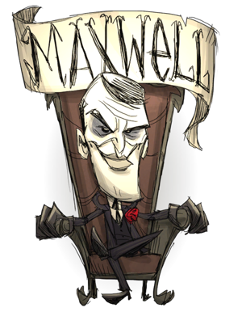

Can fragment his mind
Brings his own sword
For Maxwell, the antagonist, please see here.
| Maxwell | |
|  |
|
| Nickname | The Puppet Master |
| Motto | "Freedom!" |
| Perk | Is dapper but frail Can fragment his mind Brings his own sword |
| Sanity | 200 |
| Health | 75 |
| Hunger | 150 |
| Sanity Multiplier | +20/min |
| Special Item | |
| Starting Items | |
| “ | Freedom, at last! | ” |
| –Maxwell | ||
Maxwell is the eighth unlockable Character, taking on his mortal form. Maxwell has overall lower health, but his sanity increases by 20/min because of his dapper style. Maxwell has his own set of items upon the start of a new world, allowing him to jump into certain activities immediately. Because of his natural sanity gain, Maxwell's need for sanity-boosting items and clothing is minimal. This natural sanity gain also matches the drain of either the Dark Sword or the Night Armor, allowing Maxwell to use such items with minimal downsides. Players must be cautious when fighting, as Maxwell only has a maximum health of 75. Upon the start of new world, Maxwell has a unique intro. Instead of being greeted, he will simply wake up by himself and say "Freedom, at last!"
Maxwell is currently one of three characters that can not be unlocked by gaining Experience, the others being Wes and Webber.
Maxwell fragmenting his mind.
In addition to starting with a Dark Sword, Night Armor, 1 Purple Gem, and 4 Nightmare Fuel, Maxwell also starts with his own book called the Codex Umbra, which allows him to fragment his mind.
Codex Umbra acts similar to Wickerbottom's books, but has an infinite durability. Upon reading, a Shadow Puppet with the silhouette of Maxwell will appear. Using the book costs 15 health and 2 Nightmare Fuel. For every Shadow Puppet that exists, Maxwell's maximum sanity is reduced by 55. The player may have up to 3 puppets, at which point Maxwell will have 35 sanity and will be unable to spawn more. The shadow puppets will live up to 2.5 days before dying off. They will aid Maxwell in combat, and assist him in mining and chopping down trees. Upon death of a puppet, Maxwell's maximum sanity will be restored by 55.
Summoning multiple puppets to reduce the maximum sanity is a good way to get Maxwell to stay insane for long periods of time, which is not easily obtained normally due to his sanity regain buff.
Since Maxwell has a natural regeneration of Sanity, players are recommended to do sanity-consuming things that other players would suffer from, for example, picking Evil Flowers, using Staves and killing monsters. Sanity regenerating items such as the Tam o' Shanter are unnecessary and allow Maxwell to wear items such as the Football Helmet while still being able to rapidly regain sanity. This also makes him ideal for exploring caves or night as the sanity drain from darkness is negated.
Due to Maxwell having half the max health of Wilson, it is recommended to use his starting Night Armour when fighting dangerous creatures such as Hounds or bosses early on, reducing attack damage against him by 95% when worn. Combined with his Dark Sword, Maxwell is unexpectedly an ideal fighting character before the durability of the armor and sword wear out. Maxwell also has the advantage of being capable of building a Shadow Manipulator quicker than other characters, as he starts with a Purple Gem and Nightmare Fuel, shorting the time gathering the materials. This can allow players to quickly rebuild Night Armour and Dark Swords early game.
The most notable advantage of Maxwell is the ability to use Codex Umbra, which can allow him to summon Shadow Puppet followers at the cost of Nightmare Fuel, Health, and maximum Sanity. These Shadow Puppets will aid the player in chores and fights, and will live up to 2.5 days before vanishing. It is however difficult to lower Maxwell's sanity in order to gather more Nightmare Fuel, since his sanity constantly refills.
An effective way to keep Maxwell insane is to equip his starting Night Armour and Dark Sword at the same time, which will stack together and drain sanity at -10/m. Summoning Shadow Puppets to lower Maxwell's sanity is also effective, but costs Nightmare Fuel to do on its own. Late game, players can collect Nightmare Fuel in mass amounts by staying in the Ruins during the Nightmare Cycle. Shadow Creatures can drop stacks worth of fuel for the player to collect once the cycle reaches its calm state.
Players can only unlock Maxwell by completing Adventure Mode. After beating five consecutive Chapters (escaping from five randomly-ordered and themed Adventure Worlds), the player will find themselves in the Epilogue Chapter. Once there, if the player chooses to take pity upon Maxwell, they can attempt to release him from imprisonment in the Nightmare Throne by inserting a Divining Rod into the throne's Nightmare Lock. Once this happens, Maxwell becomes a playable character. For a complete description and spoiler of the Epilogue and other Chapter Worlds, see the Adventure Mode page.
")
")
.png.html "CardMaxwell (Foil).png (135 KB)")
")
| Player Characters |
| Wilson quotes ⋅ clothes • Willow quotes ⋅ clothes • Wolfgang quotes ⋅ clothes • Wendy quotes ⋅ clothes • WX-78 quotes ⋅ clothes • Wickerbottom quotes ⋅ clothes • Woodie quotes ⋅ clothes • Wes quotes ⋅ clothes • Maxwell quotes ⋅ clothes • Wigfrid quotes ⋅ clothes • Webber quotes ⋅ clothes • Unimplemented |

{kind=link}
{kind=link}
{kind=link}
{kind=link}
{kind=link}